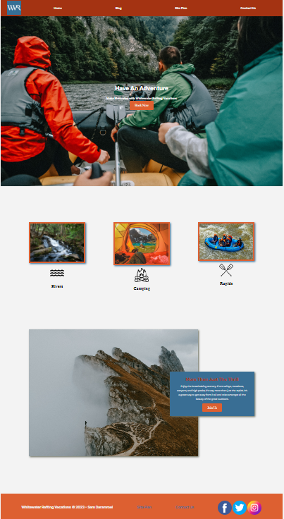
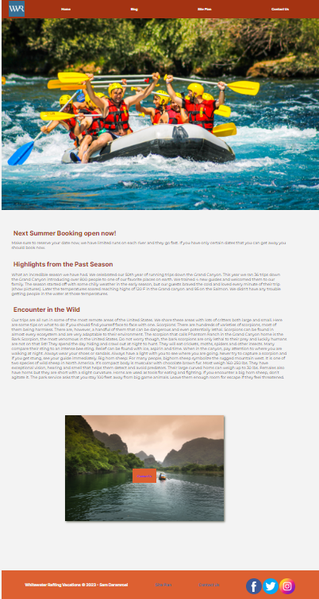

White Water rafting - Wireframing
White Water Rafting provides resources and insights to help you make informed decisions and engage in safe and enjoyable white water rafting experiences. Discover the world of white water rafting and unlock its potential for teamwork, leadership, and learning. Therefore our design needed to be simple but yet captivating so the users don’t get bored or distracted while reading the content.


White Water rafting - Homepage
The homepage design and structure of the homepage present a visually engaging layout, combining appealing images with concise and clear sections to promote the company's whitewater rafting vacations. The navigation menu, hero section, main content, and footer work together to provide users with information, an opportunity to take action, and access to additional pages and social media channels.
White Water rafting - Blog page
The design and structure of the Blog page maintain consistency with the overall website. It provides users with informative blog content about the company's offerings and experiences, along with an opportunity to contact the company if needed.
White Water Rafting - Design System
Color Palette:
- The chosen color palette consists of four colors: primary, secondary, accent 1, and accent 2.
- The primary color (#396E94) is a deep blue tone that evokes a sense of depth and stability, which can be suitable for a water-related adventure theme.
- The secondary color (#A43312) is a warm reddish-brown shade that adds contrast and energy to the palette.
- The accent 1 color (#DD6031) is a vibrant orange hue that can create a focal point and draw attention to specific elements.
- The accent 2 color (#FFFFFF) is white, which provides a clean and neutral background for the content.
Overall, the chosen color palette offers a harmonious combination of colors that can evoke a sense of adventure and energy, while also maintaining visual balance and readability.
Typography: The chosen heading font, "Inter," is a versatile and modern sans-serif typeface. It is known for its legibility and suitability for various design contexts. The paragraph font, "Montserrat," is another popular sans-serif typeface that offers a clean and elegant appearance. It is widely used for both headings and body text. The selected typography was a good choice, as both "Inter" and "Montserrat" are widely recognized and commonly used fonts that offer readability and a contemporary aesthetic. Overall, the chosen color palette and typography is well-suited for a whitewater rafting and adventure-themed website. The colors convey a sense of excitement and nature, while the typography ensures clear and legible text throughout the website.